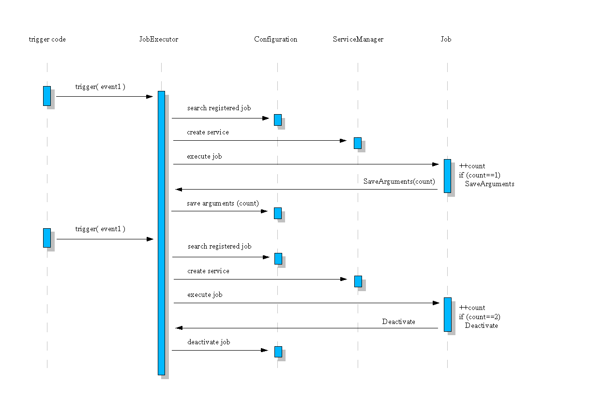

Job Execution Service
Inside the office exist a special service
com.sun.star.task.JobExecutor. He can be used to trigger special
events for which some uno components can be registered. Such
components must provide the interfaces com.sun.star.task.XJob –
for synchronous job execution – or com.sun.star.task.XAsyncJob
– for asnychronous job execution. The global executor knows all
these registered jobs and her possible trigger events by using a
configuration package org.openoffice.Office.Jobs. He starts jobs if
requested – control their life time and maintain her
configuration.
Note this
Because it's currently not implemented – asynchronous jobs are not supported yet.
Every trigger event must be coded inside the office. It requires creation of the global job executor and call his method trigger() with a string value which describe the detected event. The executor services reacts then only.
Following events are available:
onFirstVisibleTask
This occures one
times only at runtime of an office. It will be triggered if any
first visible document frame will be shown. Next occurence will
happen after next startup.
Note: An already running quickstart
module (under windows) hinder the office on a real shutdown.
onFirstRunInitialization
This
occures on first startup of an office directly after installation.
After that a special flag inside configuration will be set –
to disable it. It willn't be called again.
To add job functionality to the office it's neccessary to write a service (will be described later) and of course to register it inside configuration. The name of corresponding package is org.openoffice.Office.Jobs. There exist two sets (lists):
Job
Event
Every job must be registered here with some informations which describe it. Following entries are neccessary:
|
property name |
value type |
description |
|---|---|---|
|
AdminTime |
[string] |
Time stamp of an administrator (neccessary for network installations). A service will be started only if this stamp is new then the following one UserTime. By using these two stamps it's possible to reactivate as finished declared jobs again. |
|
UserTime |
[string] |
Time stamp of the office user. If a job was finished and wish to be deregistered – this stamp is set to the current time. After that AdminTime should be older and the job never will be started again. That's true till the administrator change his stamp. |
|
Service |
[string] |
This is the service name of the job component. But it must be the real implementation name of this service. Because the service name isn't unambigous and nobody can guarantee which implementation will be used in case the generic job service name is used. |
|
Arguments |
[any list] |
Every job can use this set to add his own configuration data. Such set provides the possibility to add key-value pairs. |
|
Async |
[boolean] |
Mark this job as an asynchronous one. |
Used time stamps are realized as special formated
strings. See following
notation:
„<day>.<month>.<year>/<hour>:<minute>:<seconds>“.
E.g.:
„01.01.2002/00:00:01“
These list contains all possible trigger events and knows which job components are registered for. The event names are used as entries inside this list. Every string value is possible – but he must be used inside the office code too. Every entry contains a list of strings which describes all registered services for this event. These strings are the same like the entries of the job list – not the service names.
Some code inside the office detect a special event – e.g. first visible document frame was opened. He creates the global job executor service and call him with a string value which descibe the event. The executor searches for any registered job inside his configuration which is registered for this event and not disabled. To check that two time stamps AdminTime and UserTime are used. (see before). After creation he queries the job component for the required interface and start it. Possible configuration data are passed to the job before. The job does his work then and return. At this time he must decide if he whish to be active and whish to be deactivated for further occurences of this event. He can do that by using a special protocol packed inside the returned Any value. A list of com.sun.star.beans.NamedValue is required there. Following values are supported:
|
property name |
value type |
description |
|---|---|---|
|
Deactivate |
[boolean] |
Job wish to be deactivated. He should call
that after successfull execution,or if something was wrong and
couldnt be resolved ... |
|
SaveArguments |
[list of NamedValue] |
Job can save his own special arguments back to configuration and mustn't implement it by itself. |
Note this
If a job will be a synchronous one – he shouldn't show any UI during his execution. Because nobody knows the time when this job will be triggered and executed. And any UI dialogs can produce many trouble if the come at wrong time.
Example
Following sequence diagram shows an example job which is triggered for an „event1“. He gets his own configuration data which includes a „count“ value. The job increased and checked it. In case of „count==1“ he knows that it was the first execution and he invite the job executor to save some configuration data for it – which means especialy the count value. But the job shouldn't be deactivated. If next „event1“ is triggered the job is started again and gets his count information. He found out that it was the second execution and decide to be deactivated from now. He invite the job executor and this service deactivate it inside the configuration.
